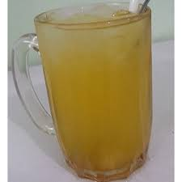

Sirup Markisa

Makassar yang merupakan salah satu kota penghasil buah markisa, telah mengelolah buah markisa menjadi sari buah, sirup atau minuman yang menyegarkan. Yang dikemas secara modern, higienis, dan tanpa pemanis buatan. Cocok untuk anda yang ingin menikmati buah markisa dan ingin merasakan manfaatnya. Sirup Markisa juga telah dikemas dengan kemasan yang praktis, yang sangat pas dijadikan sebagai oleh-oleh Asli Makassar.
Buah Markisa dapat dimakan dalam keadaan segar, atau di juice. Sementara sari buah markisa memiliki aroma yang khas, dapat dijadikan konsentrat alami. Jika ditambah gula dan diencerkan maka rasanya akan sant enak dan cocok untuk dicampur dengan sari buah lainnya.
Manfaat dan Khasiat Buah Markisa
Buah markisa merupakan salah satu buah yang memiliki banyak sekali manfaat untuk kesehatan, buah yang memiliki rasa manis sedikit asam ini memang mengandung banyak nutrisi penting yang sangat dibutuhkan oleh tubuh kita.
Seperti sumber vitamin C, antioksidan, kaya akan beta karoten, mengandung asam folat, mengandung tinggi serat dan kalium. Yang tentunya jika kita mengkonsumsi buah ini, akan memberi manfaat yang besar buat tubuh kita, seperti sebagai pereda nyeri, anti-kejang, kolitis, penenang dan anti radang bisa dicegah dengan buah ini.
Daging buah markisa dapat juga digunakan untuk meriliks saraf saat sakit kepala, meredakan diare, dan neurastenia (kelelahan kronis, lemah, tidak nafsu makan, tidak bisa berkonsentrasi, dan susah tidur).
Resep Membuat Sirup Markisa
Bahan-bahan:
~ 30 buah markisa
~ 1 1/2 cup gula pasir kurleb 350 g (sesuai selera)
~ 1000 ml air matang
Langkah-langkah: (15-20 menit)
~ Siapkan buah markisa yang sudah di cuci saya menggunakan buah markisa ungu (passiflora edulis) yang rasanya asam
~ Belah dua dan keluarkan isinya
~ Tampung dalam sebuah wadah/ baskom, lalu tambahkan air
~ Belender dengan kecepatan paling kecil tapi dengan teknik on-off (pencet 5-10 detik lepas) di ulang ulang sampai sari markisa terlepas dari bijinya ini berguna agar supaya biji buah markisa tidak ikut hancur
~ Saring dan buang busanya
~ Masak bersama gula aduk aduk sampai mendidih, tapi didihan nya jangan sampai bergolak (cara seperti masak santan)
~ Dinginkan dan masukkan kedalam botol simpan di kulkas,...Pada tahap ini rasa sirup markisa masih asam
~ Ambil seperlunya lalu tambahkan air dingin atau panas dan beri gula/madu sesuai selera
Sumber: cookpad.com, arsy.co.id